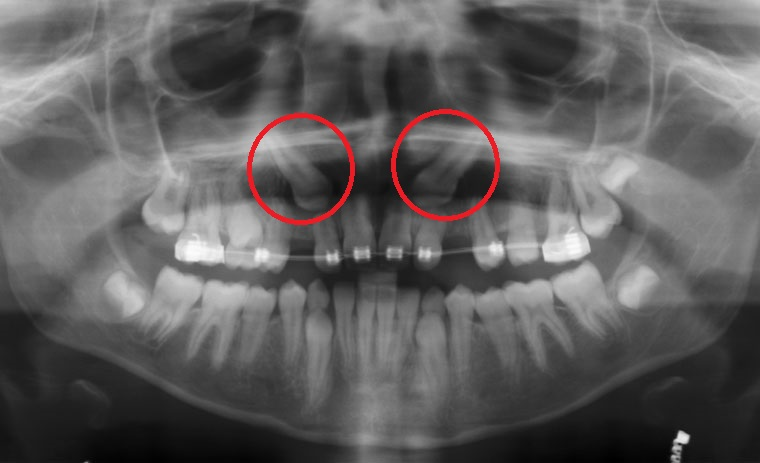

La cirugía dental es la especialidad quirúrgica que incluye el diagnóstico, la cirugía y los tratamientos relacionados con un gran aspecto de enfermedades, heridas y aspectos estéticos de la boca y los dientes.
La especialidad de la cirugia dental abarca una gran gama de tratamientos quirúrgicos, los siguientes son los mas comomunes entre pacientes
Las muelas del juicio o cordales son los últimos dientes en erupcionar, apareciendo normalmente en el período entre los 15 y 30 años.
Dependiendo de su posición, los cordales se clasifican en:
• Cordales mesio-angulados (tienen una inclinación hacia adelante)
• Disto-angulados (con inclinación hacia atrás)
• Verticales
• Horizontales
El movimiento de erupción de las terceras molares es casos no tan comunes, pueden provocar apiñamientos en los dientes inferiores.
A la hora de tratar de erupcionar las terceras molares pueden provocar molestar en la zona de la encía, como resultado dolor e irritación .
Si la pieza erupciona de manera irregular podría provocar un daño en la pieza vecina, creando una carie o inclusive dañando el nervio.
La recuperación total de la extracción de una muela del juicio se produce tras una o dos semanas, dependiendo de cada caso. Tras la intervención, además de sentir dolor, es normal que la herida pueda sangrar durante al menos 24 horas.
Por ello se aplicará una gasa sobre la misma que se deberá mantener apretada durante unos 20 minutos y que se deberá cambiar sucesivamente en tanto se mantenga el sangrado.
En el caso de que el cirujano haya tenido que cortar para proceder a la extracción, habrá suturado la herida y por tanto, una vez cicatrizada, deberá procederse a su eliminación.
No obstante, para facilitar la recuperación habrá que seguir las siguientes recomendaciones:
Los dientes retenidos (inclusión dentaria) son aquellas piezas dentales que no pueden emerger correctamente de la encía. La inclusión dentaria suele ser el resultado del apiñamiento de las piezas, que no dejan espacio suficiente para que aflore una nueva pieza. La retención puede tener lugar cuando se pierde un diente de leche antes de que el nuevo diente esté listo para emerger, lo que permite a las piezas restantes desviarse y ocupar el espacio reservado a la nueva. Sin embargo, la mayoría de las piezas retenidas son las muelas del juicio, porque son los últimos molares permanentes en salir y la mandíbula carece de suficiente espacio para acomodarlos.
La cirugía mínimamente invasiva, consiste en realizar una pequeña insición en la zona de la pieza retenida, seguido se colocara un pequeño botón donde el ortodoncista se encargara de desplazar la pieza a su lugar correcto.
La cirugía tiene una duracion de 30min y se realiza con anestesia local.
El proceso de recuperación es muy corto